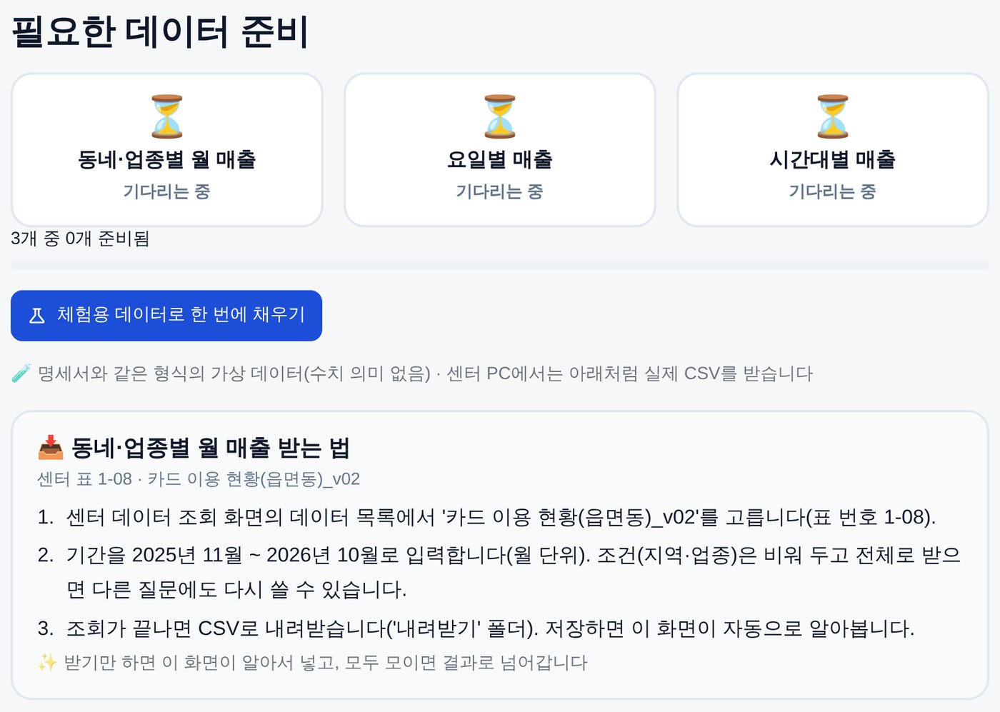
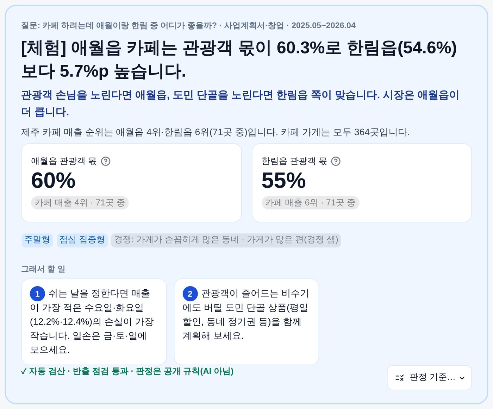
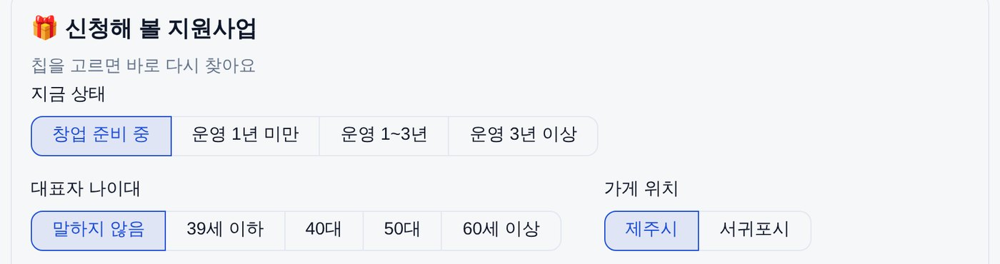
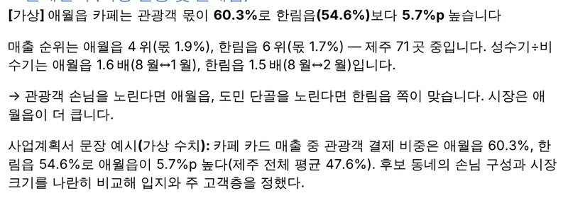
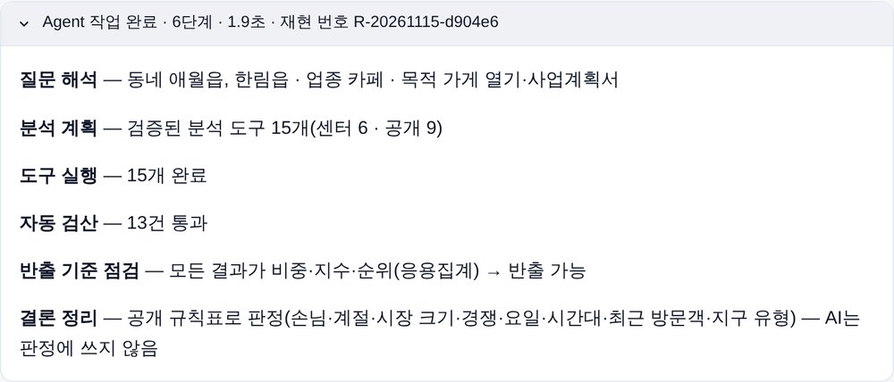
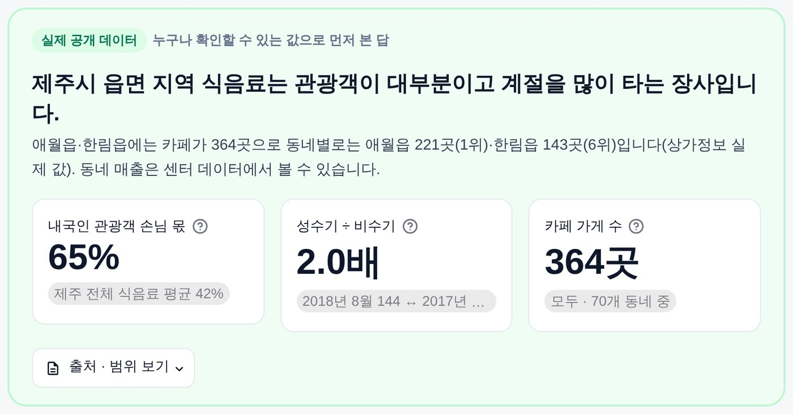
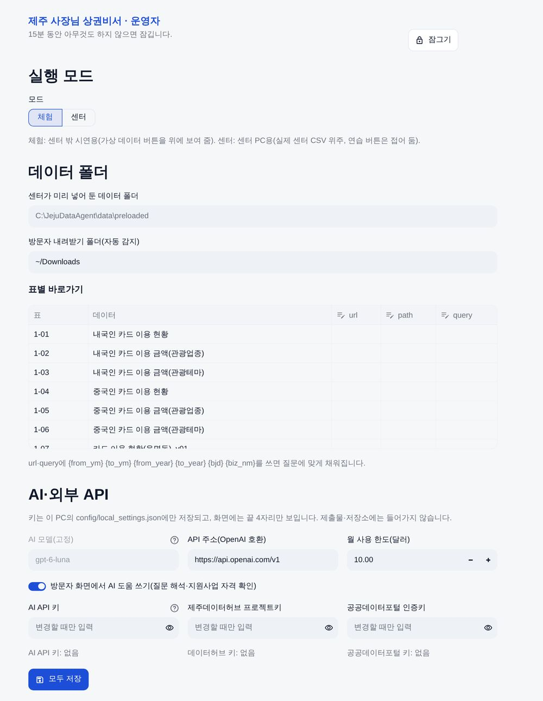

제주 사장님 상권비서
관광객일까 도민일까, 언제 붐빌까 — 제주 사장님의 상권 질문에
센터 카드 데이터로 답하고, 사업계획서 자료와 반출 신청까지
🔒 센터 데이터는 AI에 보내지 않음✅ 결과는 처음부터 반출 기준대로

실제 앱 화면 · 센터 수치는 체험용 가상 데이터라 [체험] 표시

설치 없이 바로 써 보기jeju-data-agent.streamlit.app
관광객일까 도민일까, 언제 붐빌까 — 제주 사장님의 상권 질문에
센터 카드 데이터로 답하고, 사업계획서 자료와 반출 신청까지
실제 앱 화면 · 센터 수치는 체험용 가상 데이터라 [체험] 표시
센터에만 있는 '우리 동네 × 업종 × 관광객' 숫자를,
코딩 없이 방문 한 번에.
센터 안에서는 안 됩니다. 벽이 셋 있기 때문입니다.
표를 직접 골라
기간·조건까지 정해 내려받기
고르는 건 방문자 몫
받은 파일은 알아서 인식
센터 데이터 원본·조회 결과는
외부 AI 전송 금지
센터 규정 위반
AI는 질문 해석만, 계산은 PC 안 규칙
10 미만 수치·엑셀 표는
원칙적으로 반출 불가
결과가 심사에서 막힘
비율·순위, 그림, 신청 문구
다른 AI는 분석에서 끝나고,
상권비서는 센터 밖으로 들고 나가는 결과까지 갑니다
벽의 근거: 대회 게시판 운영진 답변(2026.10~11) · 센터 데이터 반출 정책(2026.9)
애월과 한림 중 카페 자리를 고르는 예비창업자(가상 인물)
다음 쪽부터 실제 앱 화면입니다.
예시를 누르거나 평소 말로 묻고, 이해한 내용은 칩으로 확인·수정

받을 표와 받는 법을 알려 주고, 받으면 알아서 인식합니다





문제인식 · 실현가능성 · 성장전략 항목별로 문장 예시와 그림, 출처까지

결과 단계에서 Agent가 혼자 하는 6단계 · 약 1초

외부 AI로도 보내지 않습니다
비율·순위와 그림(PNG)만, 출처 자동 기재
센터 조회 화면에서 CSV를 받으면 앱이 표를 알아보고 자동으로 넣습니다
센터 명세서와 같은 컬럼으로 만들어 시연하고, 센터에서는 실제 값으로 바뀝니다
데이터명·출처·전처리·이용조건은 부록 A와 「데이터 활용 명세서」에 있습니다.
판정 규칙 공개 + 재현 번호
가상 값은 화면·문서에 [체험]

install.bat필요한 프로그램 자동 설치
6~12자리설정 화면 잠금
run.bat브라우저로 열림
AI 키가 없으면 규칙으로 동작
방문자 화면엔 사용량 %만

센터 PC 설치본과 같은 프로그램 · [예시 결과 바로 보기]를 누르면 3초 만에 결과
시연 영상(3분): youtu.be/sO9QfRvw-D8
| 심사 항목(배점) | 본문(그림) | 부록(세부 표) |
|---|---|---|
| 분석 주제의 타당성과 창의성(15) | 2쪽 개념 · 3쪽 차별성 · 4쪽 네 컷 시나리오 | A-0 센터의 지금 문제·AI 분석 목표 |
| 필수 데이터 활용 적절성(20) | 9쪽 데이터가 쓰이는 곳 | A-1~3 데이터명·출처·활용 항목·전처리·이용조건 |
| AI Agent 기술성 및 완성도(25) | 8쪽 Agent 구성 · 10쪽 검증 | A-0 참여자·자율 범위 · A-4~6 모델·도구·구현 범위 |
| 편의성 및 실용성(25) | 5~7쪽 실제 화면(질문·데이터 준비·결과·가져가기) · 11쪽 설치·운영자 화면·공개 데모 | A-7~8 사전 설치 목록·PC·외부 서비스 |
| 결과 신뢰성 및 재현성(15) | 8쪽 판단은 규칙이 · 10쪽 검증 | B 판정 규칙표·한계·AI 활용 |
| 현황(근거) | 내용 | Agent가 답하는 방식 |
|---|---|---|
| 이용자 감소 | 2023년 965명 → 2024년 1,154명 → 2025년 1~8월 464명(연환산 약 700명). 하루 몇 명 수준(도의회 의안 2795) | 방문할 이유(센터에서만 나오는 수치)를 결과마다 보여 줌 |
| 직원 1:1 지원의 한계 | 직원 분석·컨설팅 연 10~12건, 예산 동결로 교육·경진대회 축소 | 질문→데이터 선택→분석→반출까지 셀프서비스 |
| 대상 확장 | 2026.4 '데이터 프리존' 전환, "프로그래밍에 익숙하지 않은 도민도 손쉽게"(제주TP) | 일상어 질문, 결론 먼저, 쉬운 말 |
| 실제 방문 목적 | 방문자 대다수는 기관·기업, 목적은 논문·현황자료·사업계획서(운영진 답변 11/1~2) | 목적별 출력: 사업계획서 근거팩 / 보고서·논문용 문어체 문장과 인용 표기 |
| 막히는 지점 | 표 71종 중 무엇을 받을지 모름, 영문 컬럼 CSV 해석, 반출 규정(단순집계 10 미만 불가, 그림은 PNG/JPG, 승인 최대 5일) | 필요한 표·기간 안내, 자동 인식, 반출 기준을 처음부터 지킨 결과물 |
| 목표 | 구체 내용 | 현재 상태 |
|---|---|---|
| ① 질문을 분석 계획으로 | 자유 문장에서 동네·업종·대상·관점을 뽑아(규칙 + 선택적 AI) 필요한 센터 표·기간·조건과 분석 단계를 정함 | 구현 · 15문항 실측 완전 정답 규칙 10, AI 15 |
| ② 받은 데이터를 스스로 처리 | 내려받기 폴더를 3초마다 확인, 컬럼 일치도로 표 판별, 모두 준비되면 결과로 자동 진행 | 구현 |
| ③ 검증된 도구로 분석·검산 | 비중·순위·지수·요일·시간대·가게 수·동네 비교 등 10개 도구, 기간 누락·중복·표본 부족 자동 검산 | 구현 · 6단계 약 2초 |
| ④ 공개 규칙으로 판정 | 손님 구성·계절·시장 크기·경쟁·요일·시간대 6개 규칙표로 결론 문장과 할 일 3개(같은 데이터면 같은 결론, 재현 번호) | 구현 |
| ⑤ 문서에 넣을 형태로 | 사업계획서 항목(문제인식·실현가능성·성장전략)별 근거팩, 보고서 DOCX, PNG 그림, 반출 신청 문구 | 구현 |
| ⑥ 공개 데이터로 먼저·교차 확인 | 데이터허브·공공데이터포털 실제 값으로 먼저 답하고, 센터 결과와 같은 방향인지 확인 | 구현 |
| 참여자 | 목표 | Agent와 하는 일 |
|---|---|---|
| 방문자 | 문서에 넣을 근거를 방문 1회로 | 질문, 이해 확인·고치기, 센터 조회 화면에서 CSV 내려받기, 결과 확인, 공고·활용 사유 선택, 반출 신청 |
| Agent | 정확하고 반출 가능한 결과를 쉽게 | 질문 해석·분석 계획, 데이터 안내·자동 인식, 도구 실행·검산, 규칙 판정, 문서·반출 묶음 생성, 지원사업 거르기 |
| 센터 직원(운영자) | 적은 인력으로 운영, 규정 준수 | 설치·PIN, 데이터 폴더·조회 화면 바로가기 등록, AI 키·월 한도, 방문 예약 준비, 반출 접수(자동 점검 참고) |
| 반출 심사자 | 규정에 맞는 결과만 반출 | 신청 문구의 출처·기간·사유와 응용집계·PNG 여부 확인 |
| 구분 | 데이터 | 이 서비스에서 하는 일 |
|---|---|---|
| 필수 · 센터 | 카드 이용 현황 1-08(읍면동, 관광객·도민 구분), 1-12(요일별), 1-14(시간대), 명세서 v12 표 71종 | 동네×업종의 관광객 몫, 월별 흐름(성수기·비수기), 동네 매출 순위, 요일·시간대 분포 — 결론의 중심 |
| 필수 · 데이터허브 | 597 내국인 관광객 카드 이용(2016.09~2018.12), 관광지 및 상업지구 카드(요일·시간대·이용자 유형, 2016.09~2017.11) | 센터 결과의 방향 교차 확인, 시·도심/읍면 4그룹 비교, 지구 유형별 요일·시간대·손님 구성 |
| 보조 · 공공데이터포털 | 상가(상권)정보(2026.09), 관광공사 지역별 방문자 수(2025.10~2026.09), 행안부 법정동 인구(2026.10), K-Startup·기업마당 공고 | 카드 데이터에 없는 경쟁(가게 수), 최근 방문객 흐름, 도민 1,000명당 가게 수, 신청할 지원사업 |
| 데이터명 | 출처 | 활용 항목 | 수집·전처리 | 이용조건 |
|---|---|---|---|---|
| 카드 이용 현황(읍면동)_v02 1-08 | 제주빅데이터센터 | 법정동·업종·이용자 구분(도민/개별/단체 관광객)·월·이용금액·건수·이용자 수 | 센터 조회 화면에서 표·기간(월)·조건 선택 → CSV(UTF-8, 영문 컬럼) → 내려받기 폴더 자동 인식, 컬럼 일치도로 표 판별, 'NA'는 실제 값으로 유지. 1-12는 공휴일이 원래 요일에도 집계돼(운영진 답변) 공휴일 행 제외, 1-14는 시간대 길이(점심 3시간·밤 9시간)를 감안한 1시간당 비중 | 센터 PC 안에서 분석. 반출은 응용집계(비중·순위·지수)와 PNG만, 단순집계 10 미만 불가, 원본·조회 결과 외부 LLM 전송 안 함. 퇴실 시 삭제 |
| 카드 이용 현황(요일별)_v02 1-12 | 센터 | 법정동·업종·요일·이용자 구분 | ||
| 카드 이용 현황(시간대)_v02 1-14 | 센터 | 법정동·업종·시간대 5구간 | ||
| 데이터 명세서 v12(표 71종) | 센터 | 표 이름·컬럼·코드표(법정동 73, 업종 42 등) | xlsx → 카탈로그 JSON(표 추천·컬럼 판별·지명 사전) | 센터 제공 문서 |
| 597 내국인 관광객 지역·업종·성별·연령대별 카드 이용 | 제주데이터허브 | 시군구·도심/읍면·업종 9종·관광객/도민·연령·성별·월·이용금액 | Open API 전체 기간(2016.09~2018.12, 19,573행) 동봉. 값 앞뒤 공백 제거, 연령대 표기 통일('20 미만'·'20대미만' → '20대 미만'), '전체' 합계 행 제외(이중 집계 방지) | 제한 없음·무료(포털 15094857), 제출물 포함 가능(운영진) |
| 관광지 및 상업지구 요일별·시간대별·이용자 유형별 카드 데이터 | 제주데이터허브 | 지구 5종(상업지·내국인/중국인 주요 관광지·제주시/서귀포시 구도심) × 요일·시간대·이용자 유형 × 월 | Open API(PC에서 받음, 2016.09~2017.11) 동봉. 세 표를 한 표로 합쳐 지구 유형 비교. 질문 동네 → 가장 가까운 지구 유형(읍면 → 관광지 등) 대응은 추정으로 표시. 같은 계열 업종별·연령성별·테마별 3종도 받아 동봉(화면 연결은 다음 단계) | 제한 없음·무료(포털 15094889 등) |
| 데이터 | 활용 | 수집·전처리 | 이용조건 |
|---|---|---|---|
| 소상공인시장진흥공단 상가(상권)정보(2026.09) | 경쟁(같은 업종 가게 수·순위), 가게 하나당 매출 지수 | 공공데이터포털 파일(키 불필요). 제주 59,101곳 → 법정동×업종 가게 수 7,486행(상호·주소·좌표 제외). 법정동 73곳이 센터 1-08과 일치. 카드 업종 대응표(카페 → 비알콜 음료점업 등) | 제한 없음(15083033) |
| 한국관광공사 지역별 방문자 수 | 최근 1년 외지인 방문자 월별·요일 흐름 | Open API(인증키). 제주시·서귀포시 일별 현지인·외지인·외국인(2025.10~2026.09). 매출 아님을 표시 | 제한 없음(15101972) |
| 행정안전부 법정동 주민등록 인구 | 도민 1,000명당 같은 업종 가게 수 | Open API. 리 단위를 법정동 73곳으로 합산(2026.10) | 제한 없음(15108071) |
| K-Startup 사업공고, 기업마당 지원사업 | 신청할 지원사업 찾기·근거팩 부록 | Open API 실시간(30분 캐시, 실패 시 마지막 저장본). 지역·창업 단계·나이·업종으로 거름 | K-Startup 제한 없음, 기업마당 공공누리 3유형 |
| 항목 | 내용 |
|---|---|
| 모델 | OpenAI gpt-6-luna(입력 $0.10 / 출력 $0.50, 100만 토큰당) 하나만 사용. OpenAI 호환 API 주소로 바꿔 쓸 수 있음(운영자 설정) |
| 쓰는 곳 | ① 자유 문장 질문에서 장소·업종 표현 추출(구조화 출력, 허용 목록 검증) ② 지원사업 공고문과 입력 조건의 자격 대조(버튼을 누를 때만) |
| 안 쓰는 곳 | 결론 판정, 수치 계산·생성, 센터 데이터 해석(모두 규칙 코드). AI 답의 지명은 내장 제주 지명 사전으로 다시 확인 |
| 선택 근거(실측 2026-11-03) | 질문 15문항 완전 정답: 규칙만 10, luna 13, 상위 모델 sol 13(비용 20배) / 지원사업 자격 36건 중 30건 일치(갈린 6건 중 5건은 sol이 더 보수적일 뿐) |
| 비용 | 질문 해석 1회 약 $0.0001, 자격 대조 1회 약 $0.0008 → 시나리오 1회 방문 약 $0.0009. 월 한도 기본 $10(운영자 변경), 한도 도달 시 AI 끄고 화면에 알림. 공급자 쪽 프로젝트 예산 한도 병행 권장 |
| 로컬 LLM | 센터 PC GTX 1060(VRAM 3GB)으로는 실용 속도가 어려워 쓰지 않음. 키가 없으면 규칙 해석·규칙 판정으로 전 과정 동작 |
| 분석 도구(코드) | 하는 일 | 데이터 |
|---|---|---|
| compare_share | 관심 대상(관광객·외국인 등) 비중 vs 제주 전체 같은 업종 | 1-08, 597 |
| trend | 월별 흐름, 평소=100 지수, 성수기·비수기, 최고/최저 배율, 기간 누락 검사 | 1-08, 597, 방문자 수 |
| top_n | 같은 업종 매출의 동네 순위·몫(관심 동네가 순위 밖이어도 표시) | 1-08 |
| region_compare | 후보 동네 2곳 이상을 나란히: 관심 대상 비중·매출 순위·몫·성수기÷비수기 | 1-08 |
| pattern | 요일·시간대 분포(공휴일 중복 제외, 시간대 길이 보정한 1시간당 비중) | 1-12, 1-14, 방문자 수 |
| share_by · group_share · season_by | 연령대 비중, 시·도심/읍면 4그룹 비교, 관광객·도민 계절 차이 | 597 |
| store_rank | 같은 업종 가게 수 순위·몫(+ 인구 대비) | 상가정보, 인구 |
| district_profile | 지구 유형별 요일·시간대·손님 구성 | 관광지 및 상업지구 |
외부 API(데이터허브·공공데이터포털·OpenAI)와 없을 때의 동작은 11쪽 표.
| 구분 | 내용 |
|---|---|
| 구현 완료(제출물) | 화면 4단계, 질문 해석(규칙+AI), 데이터 안내·자동 인식, 분석 도구 10종·검산, 판정 규칙 6종, 결론·근거 카드·그림, 보고서·근거팩·반출 묶음·신청 문구, 지원사업 찾기·자격 판정, 공개 데이터 6종 연동, 운영자 페이지(PIN), 퇴실 정리, Windows 설치·실행 스크립트, 체험 모드 |
| 센터 탑재 후 확인 | 실제 센터 CSV로 컬럼·코드값 검증(명세서·가상 데이터·실제 공개 데이터로는 검증 완료), 판정 기준점 재점검, 센터 조회 화면 바로가기 등록 |
| 확장 제안 | 유동인구·POS 표 연결(행정동–법정동 대응표), 방문 전 집에서 공개 데이터로 미리 준비, 배우는 모드(분석 단계 보기) |
| 항목 | 내용 |
|---|---|
| Python 3.11.x 64비트 | python.org Windows 설치 파일(설치 첫 화면 'Add python.exe to PATH' 체크). 없으면 설치 스크립트가 winget 설치를 제안 |
| pip 패키지 6종 | 위 5-2의 버전 고정 목록(requirements.txt). install.bat이 앱 폴더의 가상환경(.venv)에만 설치 — PC 전체에 영향 없음 |
| 브라우저 | Edge 또는 Chrome(기본 설치된 것) |
| 그 밖 | GPU·DB·서버 프로그램·관리자 권한 상시 실행 없음. 디스크 약 1GB(.venv 포함) |
설치 순서: Python 설치 → 앱 폴더의 install.bat(3~10분, 운영자 PIN 설정, 바탕화면 바로가기) → run.bat. 센터 모드에서는 운영자 페이지에서 내려받기 폴더와 조회 화면 바로가기만 한 번 등록.
| 영역 | Agent가 스스로 | 사람이 확인·결정 | 하지 않는 것 |
|---|---|---|---|
| 질문 해석 | 동네·업종·대상·관점 추출, 사전 검증, 알려 줄 순서 결정 | "이렇게 이해했어요" 확인, [고치기] | 사전에 없는 지명 추측(모르는 말로 표시) |
| 데이터 | 필요한 표·기간·조건 결정, 받은 파일 판별, 모두 준비되면 결과로 진행 | 센터 조회 화면에서 내려받기, [바꾸기] | 센터 시스템 직접 접속·쿼리, 앱이 읽지 않은 파일 수정·삭제 |
| 분석·판정 | 계획한 도구 실행, 검산, 규칙 판정, 할 일 제안 | [판정 기준 보기]로 근거 확인 | AI 판정, 근거 없는 수치·경쟁 판단(데이터 없으면 '판정 안 함') |
| 지원사업 | 조건 거르기·규칙 판정, (버튼 시) AI 자격 대조 | 근거팩에 넣을 공고, 활용 사유 | 신청 대행, 공고문에 없는 조건 지어내기 |
| 반출 | 응용집계·PNG만으로 묶음, 신청 문구, 자동 점검 | 방문자 신청, 직원 승인 | 원본·데이터 미리보기 반출, 결과 외부 전송 |
| 비용·보안 | 월 한도 도달 시 AI 끄고 알림, 퇴실 정리 | 운영자 PIN으로 키·한도·폴더 설정 | 센터 데이터를 외부 LLM으로 전송 |
| 항목 | 내용 |
|---|---|
| 최소 사양 | i7-8700 / GTX 1060 / RAM 32GB — GPU 미사용, 메모리 약 0.5GB |
| OS·브라우저 | Windows 11, Edge 또는 Chrome |
| 사전 설치 요청 | Python 3.11 64비트, pip 패키지 6개(버전 고정) |
| 기술 환경 | Streamlit 1.66 · pandas 3.1 · numpy 2.4 · matplotlib 3.11 · openpyxl · python-docx |
| UI 구성 | 방문자 4단계 화면 + 숨은 운영자 페이지(/admin, PIN) + 체험/센터 모드 |
| 윈도우 실측 | 집 PC에서 설치→예시 결과→반출 묶음까지 확인(11/15) |
| 서비스 | 없을 때 |
|---|---|
| OpenAI(질문 해석·자격 대조) | 규칙 해석·규칙 판정, 화면에 쉬운 말로 알림 |
| 제주데이터허브 API | 동봉 공개 데이터 사용 |
| 공공데이터포털 API | 지원사업 저장본, 동봉 파일 |
| pypi.org | 설치 때만 필요 |
| 판정 | 규칙 | 기준점·비고 |
|---|---|---|
| 손님 구성 | 관광객(개별+단체) 매출 비중 65% 이상 '뚜렷한 관광객 장사', 55~65 '관광객 장사', 45~55 '반반', 35~45 '도민 단골 장사', 35 미만 '뚜렷한 도민 단골 장사'. 제주 같은 업종과의 차이 3%p 미만 '평균 수준'. 30행 미만 판정 보류 | 597: 읍면 식당·카페 64.6~65.0%, 제주시 도심 29.3% |
| 계절 | 가장 많은 달 ÷ 가장 적은 달 2.0배 이상 '계절 영향 큼', 1.5~2.0 '있음', 미만 '고른 편'. 평소 달=100일 때 120 이상 성수기, 80 미만 비수기. 12개월 미만 판정 안 함 | 597: 관광객 2.3배, 도민 1.5배 |
| 시장 크기 | 같은 업종 매출의 동네 순위 3위 안 '손꼽히는 큰 시장', 10위 안 '큰 시장', 절반 안 '중간', 그 밖 '작은 시장' | 센터 1-08 |
| 경쟁(가게 수) | 같은 업종 가게 수 순위 3위 안 '손꼽히게 많음', 10위 안 '많음'. 매출 몫 ÷ 가게 몫 1.2 이상 '손님 넉넉', 0.8 미만 '가게가 많은 편' | 상가정보(실제) |
| 요일 | 토+일 비중 33% 이상 '주말형', 25% 이하 '평일형'(고르게 나뉘면 28.6%). 공휴일은 원래 요일에 포함돼 뺌 | 운영진 답변(11/2) |
| 시간대 | 시간대 길이가 달라 1시간당 비중으로 비교, 1위가 2위의 1.2배 이상이면 '집중형' | 명세서 [참고4] |